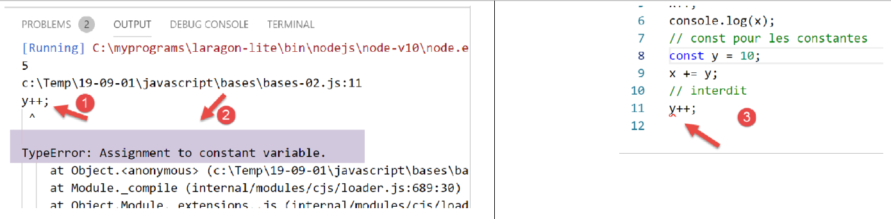

3. JavaScript 基础
注：下文中，术语 [Javascript] 将始终指代 ECMAScript 6 标准。
在之前的 JavaScript 项目中，创建一个名为 [bases] 的文件夹。我们将把本节的示例放在其中：

3.1. 脚本 [bases-01]
为了介绍 PHP7 的基础知识，我们使用了以下代码（参见链接段落）：
<?php
// 这是一条注释
// 未声明的变量
$nom = "dupont";
// 屏幕显示
print "nom=$nom\n";
// 包含不同类型元素的数组
$tableau = array("un", "deux", 3, 4);
// 其元素个数
$n = count($tableau);
// 一个循环
for ($i = 0; $i < $n; $i++) {
print "tableau[$i]=$tableau[$i]\n";
}
// 使用数组内容初始化两个变量
list($chaine1, $chaine2) = array("chaine1", "chaine2");
// 将两个字符串连接
$chaine3 = $chaine1 . $chaine2;
// 显示结果
print "[$chaine1,$chaine2,$chaine3]\n";
// 使用函数
affiche($chaine1);
// 变量的类型可以确定
afficheType("n", $n);
afficheType("chaine1", $chaine1);
afficheType("tableau", $tableau);
// 变量的类型在运行时可能会改变
$n = "a changé";
afficheType("n", $n);
// 函数可以返回结果
$res1 = f1(4);
print "res1=$res1\n";
// 函数可以返回一个值数组
list($res1, $res2, $res3) = f2();
print "(res1,res2,res3)=[$res1,$res2,$res3]\n";
// 本可以将这些值存入数组中
$t = f2();
for ($i = 0; $i < count($t); $i++) {
print "t[$i]=$t[$i]\n";
}
// 测试
for ($i = 0; $i < count($t); $i++) {
// 仅显示字符串
if (getType($t[$i]) === "string") {
print "t[$i]=$t[$i]\n";
}
}
// 比较运算符 == 和 ===
if("2"==2){
print "avec l'opérateur ==, la chaîne 2 est égale à l'entier 2\n";
}else{
print "avec l'opérateur ==, la chaîne 2 n'est pas égale à l'entier 2\n";
}
if("2"===2){
print "avec l'opérateur ===, la chaîne 2 est égale à l'entier 2\n";
}
else{
print "avec l'opérateur ===, la chaîne 2 n'est pas égale à l'entier 2\n";
}
// 其他测试
for ($i = 0; $i < count($t); $i++) {
// 仅显示大于10的整数
if (getType($t[$i]) === "integer" and $t[$i] > 10) {
print "t[$i]=$t[$i]\n";
}
}
// 一个 while 循环
$t = [8, 5, 0, -2, 3, 4];
$i = 0;
$somme = 0;
while ($i < count($t) and $t[$i] > 0) {
print "t[$i]=$t[$i]\n";
$somme += $t[$i]; //$somme=$somme+$t[$i]
$i++; //$i=$i+1
}//while
print "somme=$somme\n";
// 程序结束
exit;
//----------------------------------
function affiche($chaine) {
// 显示 $chaine
print "chaine=$chaine\n";
}
//显示
//----------------------------------
function afficheType($name, $variable) {
// 显示 $variable 的类型
print "type[variable $" . $name . "]=" . getType($variable) . "\n";
}
//afficheType
//----------------------------------
function f1($param) {
// 将 10 加到 $param
return $param + 10;
}
//----------------------------------
function f2() {
// 返回 3 个值
return array("un", 0, 100);
}
?>
将其转换为 JavaScript 后，得到以下代码：
'use strict';
// 这是一条注释
// 常量
const nom = "dupont";
// 屏幕显示
console.log("nom : ", nom);
// 一个包含不同类型元素的数组
const tableau = ["un", "deux", 3, 4];
// 其元素个数
let n = tableau.length;
// 一个循环
for (let i = 0; i < n; i++) {
console.log("tableau[", i, "] = ", tableau[i]);
}
// 使用数组内容初始化两个变量
let [chaine1, chaine2] = ["chaine1", "chaine2"];
// 两个字符串的拼接
const chaine3 = chaine1 + chaine2;
// 显示结果
console.log([chaine1, chaine2, chaine3]);
// 使用函数
affiche(chaine1);
// 变量的类型可以确定
afficheType("n", n);
afficheType("chaine1", chaine1);
afficheType("tableau", tableau);
// 变量的类型在运行时可能会改变
n = "a changé";
afficheType("n", n);
// 函数可以返回结果
let res1 = f1(4);
console.log("res1=", res1);
// 函数可以返回一个值数组
let res2, res3;
[res1, res2, res3] = f2();
console.log("(res1,res2,res3)=", [res1, res2, res3]);
// 本可以将这些值存入数组中
let t = f2();
for (let i = 0; i < t.length; i++) {
console.log("t[i]=", t[i]);
}
// 测试
for (let i = 0; i < t.length; i++) {
// 仅显示字符串
if (typeof (t[i]) === "string") {
console.log("t[i]=", t[i]);
}
}
// 比较运算符 == 和 ===
if ("2" == 2) {
console.log("avec l'opérateur ==, la chaîne 2 est égale à l'entier 2");
} else {
console.log("avec l'opérateur ==, la chaîne 2 n'est pas égale à l'entier 2");
}
if ("2" === 2) {
console.log("avec l'opérateur ===, la chaîne 2 est égale à l'entier 2");
} else {
console.log("avec l'opérateur ===, la chaîne 2 n'est pas égale à l'entier 2");
}
// 其他测试
for (let i = 0; i < t.length; i++) {
//仅显示大于10的整数
if (typeof (t[i]) === "number" && Math.floor(t[i]) === t[i] && t[i] > 10) {
console.log("t[i]=", t[i]);
}
}
// 一个 while 循环
t = [8, 5, 0, -2, 3, 4];
let i = 0;
let somme = 0;
while (i < t.length && t[i] > 0) {
console.log("t[i]=", t[i]);
somme += t[i];
i++;
}
console.log("somme=", somme);
// 程序终止，因为没有可执行的代码了
//显示
//----------------------------------
function affiche(chaine) {
// 显示字符串
console.log("chaine=", chaine);
}
//afficheType
//----------------------------------
function afficheType(name, variable) {
// 显示变量类型
console.log("type[variable ", name, "]=", typeof (variable));
}
//----------------------------------
function f1(param) {
// 将 10 加到参数上
return param + 10;
}
//----------------------------------
function f2() {
// 返回 3 个值
return ["un", 0, 100];
}
下面我们来分析一下代码 PHP 和 ECMAScript 6 与声明 [use strict]（第 1 行）之间的差异：
- 第一个区别在于，在 ECMAScript 中，变量使用以下关键字进行声明：
- [let] 用于声明在代码执行过程中值可能会改变的变量；
- [const] 用于声明在代码执行过程中值不会改变的变量（即常量）；
- 也可以使用关键字 [var] 代替 [let]。这是在 ECMAScript 5 中使用的关键字。本课程中我们将不使用它；
- 第 6 行：显示方法 [console.log] 可以显示各种类型的数据：字符串、数字、布尔值、数组、对象。方法 PHP 和 [print] 无法原生显示数组和对象。 在表达式 [console.log] 中，[console] 是一个对象，而 [log] 是该对象的一个方法；
- 第 8 行：JavaScript 数组是通过指针引用的对象。当编写：
const tableau = ["un", "deux", 3, 4];
变量 [tableau] 是指向字面量数组 ["un", "deux", 3, 4] 的指针。修改数组的内容不会改变其指针。因此，数组通常会使用关键字 [const] 进行声明。 在 PHP 中，数组不通过指针引用。它是一个字面量；
- 第12行：循环变量[i]在循环中通过let声明。 关键字 [let] 遵循代码块作用域（大括号内的代码）。因此，第 12 行中的变量 [i] 仅在循环内部有效；
- 第 18 行：字符串连接运算符在 JavaScript 中是 +，在 PHP 中是 .。该运算符的一个特点是，它优先于加法运算符 +。因此：
- 在 PHP 中，‘1’ +2 结果为数字 3；
- 在 JavaScript 中，‘1’+2 结果为字符串 ‘12’；
- 第 20 行：[console.log] 支持显示数组；
- 第 82 行：在 JavaScript 中，无法指定函数参数的类型；
- 第 91 行：运算符 [typeof] 可用于判断数据的类型。 共有四种类型：数字、字符串、布尔值和对象。需要注意的是，JavaScript中既没有[integer]类型，也没有[tableau]类型。如前所述，数组是通过指针操作的，因此属于对象类别；
- 第50-59行：与PHP一样，JavaScript有两个比较运算符，即==和‘===’，其含义与PHP中的相同。 ESLint通常会将运算符==标记为可能的错误。应系统地使用运算符‘===’；
- 第79行：本可以使用指令 [return]，但 ESLint 会发出警告，指出 [return] 只能在函数中使用；
运行以下代码：

执行结果：
[Running] C:\myprograms\laragon-lite\bin\nodejs\node-v10\node.exe "c:\Temp\19-09-01\javascript\bases\bases-01.js"
nom : dupont
tableau[ 0 ] = un
tableau[ 1 ] = deux
tableau[ 2 ] = 3
tableau[ 3 ] = 4
[ 'chaine1', 'chaine2', 'chaine1chaine2' ]
chaine= chaine1
type[variable n ]= number
type[variable chaine1 ]= string
type[variable tableau ]= object
type[variable n ]= string
res1= 14
(res1,res2,res3)= [ 'un', 0, 100 ]
t[ 0 ]= un
t[ 1 ]= 0
t[ 2 ]= 100
t[ 0 ]= un
avec l'opérateur ==, la chaîne 2 est égale à l'entier 2
avec l'opérateur ===, la chaîne 2 n'est pas égale à l'entier 2
t[ 2 ]= 100
t[ 0 ]= 8
t[ 1 ]= 5
somme= 13
[Done] exited with code=0 in 0.316 seconds
在编写的代码中，ESLINT 报告了两个错误：

- 将光标悬停在警告的红线上，会显示错误信息 [3]。这里 ESLint 无法识别这是对两个常量的比较。两个操作数中应有一个是变量；
- 在 [4] 中，若决定不修正该错误，可通过 [Quick Fix] 选项来消除该警告；

- 在 [5] 中，我们可以选择仅对当前行或整个文件禁用该警告。此处我们选择后者。随后，文件开头将生成一行 [6]；
3.2. 脚本 [bases-02]
脚本 [bases-02] 展示了关键字 [let] 和 [const] 的用法：
'use strict';
// 初始化变量时，使用 let 或 const
// let 用于变量
let x = 4;
x++;
console.log(x);
// const 用于常量
const y = 10;
x += y;
// 禁止
y++;
- 第 11 行在执行 [1-2] 时引发错误。该错误由 ESLint 在执行 [3] 之前报告：

3.3. 脚本 [bases-03]
脚本 [bases-03] 检查 JavaScript 中的变量作用域：
'use strict';
// 变量的作用域
let count = 1;
function doSomething() {
// 此处已知 count
console.log("count=",count);
}
// 调用
doSomething();
- 尽管变量 [count] 是在函数 [doSomething] 外部声明的，但在该函数内部仍可访问。这与 PHP 存在根本区别；
执行
[Running] C:\myprograms\laragon-lite\bin\nodejs\node-v10\node.exe "c:\Temp\19-09-01\javascript\bases\bases-03.js"
count= 1
[Done] exited with code=0 in 0.3 seconds
3.4. 脚本 [bases-04]
一个局部变量掩盖了同名的全局变量：
'use strict';
// 变量作用域
const count = 1;
function doSomething() {
// 局部变量遮蔽全局变量
const count = 2;
console.log("count inside function=",count);
}
// 全局变量
console.log("count outside function=",count);
// 局部变量
doSomething();
执行
[Running] C:\myprograms\laragon-lite\bin\nodejs\node-v10\node.exe "c:\Temp\19-09-01\javascript\bases\bases-04.js"
count outside function= 1
count inside function= 2
[Done] exited with code=0 in 0.246 seconds
3.5. 脚本 [bases-05]
在函数中定义的变量在函数外部不可见：
'use strict';
// 变量的作用域
function doSomething() {
// 函数内的局部变量
const count = 2;
console.log("count inside function=", count);
}
// 此处 count 未定义
console.log("count outside function=", count);
doSomething();
ESLint 在第 9 行报错：

3.6. 脚本 [bases-06]
关键字 [let] 和 [const] 定义了作用域为 [bloc] 的变量（大括号内的代码），但关键字 [var] 未定义：
'use strict';
// 关键字 [let] 用于定义块作用域变量
{
// 变量 [count] 仅在此代码块内有效
let count = 1;
console.log("count=", count);
}
// 在此处，变量 [count] 未被识别
count++;
// 关键字 [const] 用于定义块作用域变量
{
// 变量 [count2] 仅在此块中有效
const count2 = 1;
console.log("count=", count2);
}
// 此处变量 [count2] 未被识别
count2++;
// 关键字 [var] 无法用于定义块作用域变量
{
// 变量 [count3] 将作为全局变量
var count3 = 1;
console.log("count=", count3);
}
// 此处变量 [count3] 已定义
count3++;
注释
- 第 5 行：变量 [count] 仅在声明它的代码块（第 3-7 行）内有效；
- 第 14 行：常量 [count2] 仅在声明它的代码块（第 12-16 行）内有效；
- 第 23 行：变量 [count3] 在其声明的代码块（第 21-25 行）之外被引用；
ESLint 报告以下错误：

鉴于上述代码块作用域问题，后续我们将仅使用关键字 [let] 和 [const]。
3.7. 脚本 [bases-07]
JavaScript 中的数据类型：
'use strict';
// 数据类型 jS
const var1 = 10;
const var2 = "abc";
const var3 = true;
const var4 = [1, 2, 3];
const var5 = {
nom: 'axèle'
};
const var6 = function () {
return +3;
}
// 显示类型
console.log("typeof(var1)=", typeof (var1));
console.log("typeof(var2)=", typeof (var2));
console.log("typeof(var3)=", typeof (var3));
console.log("typeof(var4)=", typeof (var4));
console.log("typeof(var5)=", typeof (var5));
console.log("typeof(var6)=", typeof (var6));
执行
[Running] C:\myprograms\laragon-lite\bin\nodejs\node-v10\node.exe "c:\Temp\19-09-01\javascript\bases\bases-07.js"
typeof(var1)= number
typeof(var2)= string
typeof(var3)= boolean
typeof(var4)= object
typeof(var5)= object
typeof(var6)= function
[Done] exited with code=0 in 0.26 seconds
注释
- 第7行（代码）：数组是一个对象。因此，[var4] 是指向该数组的指针，而非数组本身；
- 第8行（代码）：[var5]是一个指向字面量对象的指针。我们将看到，JavaScript中的字面量对象与PHP的类实例非常相似。它们同样是通过指针来引用的；
- 第 11 行（代码）：变量可以是 [fonction] 类型（结果中的第 7 行）；
3.8. 脚本 [bases-08]
该脚本展示了 JavaScript 中可能发生的类型转换。
'use strict';
// 隐式类型转换
// 类型 --> bool
console.log("---------------[Conversion implicite vers un booléen]------------------------------");
showBool("abcd");
showBool("");
showBool([1, 2, 3]);
showBool([]);
showBool(null);
showBool(0.0);
showBool(0);
showBool(4.6);
showBool({});
showBool(undefined);
function showBool(data) {
// 在随后的测试中，数据会自动转换为布尔值
console.log("[data=", data, "], [type(data)]=", typeof (data), "[valeur booléenne(data)]=", data ? true : false);
}
// 隐式类型转换 为数值类型
console.log("---------------[Conversion implicite vers un nombre]------------------------------");
showNumber("12");
showNumber("45.67");
showNumber("abcd");
function showNumber(data) {
// data + 1 无法正常工作，因为此时 jS 会执行字符串连接而非加法运算
const nombre = data * 1;
console.log("[data=", data, "], [type(data)]=", typeof (data), "[nombre]=", nombre, "[type(nombre)]=", typeof (nombre));
}
// 显式将类型转换为布尔值
console.log("---------------[Conversion explicite vers un booléen]------------------------------");
showBool2("abcd");
showBool2("");
showBool2([1, 2, 3]);
showBool2([]);
showBool2(null);
showBool2(0.0);
showBool2(0);
showBool2(4.6);
showBool2({});
showBool2(undefined);
function showBool2(data) {
// 在随后的测试中，data 显式转换为布尔值
console.log("[", data, "], [type(data)]=", typeof (data), "[valeur booléenne(data)]=", Boolean(data));
}
// 显式将类型转换为 Number
console.log("---------------[Conversion explicite vers un nombre]------------------------------");
showNumber2("12.45");
showNumber2(67.8);
showNumber2(true);
showNumber2(null);
function showNumber2(data) {
const nombre = Number(data);
console.log("[data=", data, "], [type(data)]=", typeof (data), "[nombre]=", nombre, "[type(nombre)]=", typeof (nombre));
}
// 转换为字符串
console.log("---------------[Conversion explicite vers un string]------------------------------");
showString(5);
showString(6.7);
showString(false);
showString(null);
function showString(data) {
const chaîne = String(data);
console.log("[data=", data, "], [type(data)]=", typeof (data), "[chaîne]=", chaîne, "[type(chaîne)]=", typeof (chaîne));
}
// 一些意外的隐式转换
console.log("---------------[Autres cas]------------------------------");
const string1 = '1000.78';
// 默认字符串拼接
const data1 = string1 + 1.034;
console.log("data1=", data1, "type=", typeof (data1));
const data2 = 1.034 + string1;
console.log("data2=", data2, "type=", typeof (data2));
// 显式转换为数字
const data3 = Number(string1) + 1.034;
console.log("data3=", data3, "type=", typeof (data3));
// true 被转换为数字 1
const data4 = true * 1.18;
console.log("data4=", data4, "type=", typeof (data4));
// false 被转换为数字 0
const data5 = false * 1.18;
console.log("data5=", data5, "type=", typeof (data5));
执行
[Running] C:\myprograms\laragon-lite\bin\nodejs\node-v10\node.exe "c:\Data\st-2019\dev\es6\javascript\bases\bases-08.js"
---------------[Conversion implicite vers un booléen]------------------------------
[data= abcd ], [type(data)]= string [valeur booléenne(data)]= true
[data= ], [type(data)]= string [valeur booléenne(data)]= false
[data= [ 1, 2, 3 ] ], [type(data)]= object [valeur booléenne(data)]= true
[data= [] ], [type(data)]= object [valeur booléenne(data)]= true
[data= null ], [type(data)]= object [valeur booléenne(data)]= false
[data= 0 ], [type(data)]= number [valeur booléenne(data)]= false
[data= 0 ], [type(data)]= number [valeur booléenne(data)]= false
[data= 4.6 ], [type(data)]= number [valeur booléenne(data)]= true
[data= {} ], [type(data)]= object [valeur booléenne(data)]= true
[data= undefined ], [type(data)]= undefined [valeur booléenne(data)]= false
---------------[Conversion implicite vers un nombre]------------------------------
[data= 12 ], [type(data)]= string [nombre]= 12 [type(nombre)]= number
[data= 45.67 ], [type(data)]= string [nombre]= 45.67 [type(nombre)]= number
[data= abcd ], [type(data)]= string [nombre]= NaN [type(nombre)]= number
---------------[Conversion explicite vers un booléen]------------------------------
[ abcd ], [type(data)]= string [valeur booléenne(data)]= true
[ ], [type(data)]= string [valeur booléenne(data)]= false
[ [ 1, 2, 3 ] ], [type(data)]= object [valeur booléenne(data)]= true
[ [] ], [type(data)]= object [valeur booléenne(data)]= true
[ null ], [type(data)]= object [valeur booléenne(data)]= false
[ 0 ], [type(data)]= number [valeur booléenne(data)]= false
[ 0 ], [type(data)]= number [valeur booléenne(data)]= false
[ 4.6 ], [type(data)]= number [valeur booléenne(data)]= true
[ {} ], [type(data)]= object [valeur booléenne(data)]= true
[ undefined ], [type(data)]= undefined [valeur booléenne(data)]= false
---------------[Conversion explicite vers un nombre]------------------------------
[data= 12.45 ], [type(data)]= string [nombre]= 12.45 [type(nombre)]= number
[data= 67.8 ], [type(data)]= number [nombre]= 67.8 [type(nombre)]= number
[data= true ], [type(data)]= boolean [nombre]= 1 [type(nombre)]= number
[data= null ], [type(data)]= object [nombre]= 0 [type(nombre)]= number
---------------[Conversion explicite vers un string]------------------------------
[data= 5 ], [type(data)]= number [chaîne]= 5 [type(chaîne)]= string
[data= 6.7 ], [type(data)]= number [chaîne]= 6.7 [type(chaîne)]= string
[data= false ], [type(data)]= boolean [chaîne]= false [type(chaîne)]= string
[data= null ], [type(data)]= object [chaîne]= null [type(chaîne)]= string
---------------[Autres cas]------------------------------
data1= 1000.781.034 type= string
data2= 1.0341000.78 type= string
data3= 1001.814 type= number
data4= 1.18 type= number
data5= 0 type= number